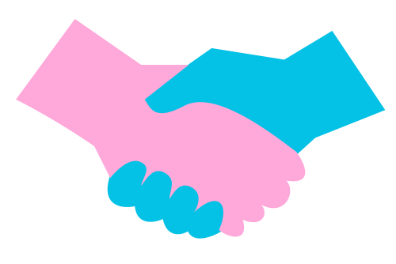

Субота. Парк.
Ти, сусіди
і природа.
Знаходь толоки поруч, приєднуйся в один клік і дивись, як Львів стає чистішим — кожного тижня.
Стрийський парк
Три кроки — і ти в ком'юніті
Обери точку
на мапі
Переглянь толоки у своєму районі або знайди найближчу до твого дому.
Приходь у вихідні
Ми дамо граблі, совки, рукавички, мішки для сміття, питну воду та серветки. Більше нічого не треба.
Ділись
результатом
Фото До/Після, нові знайомства і бейджі — пам'ять про корисний день.
Що прибираємо
Толока в Стрийському парку
Нд 27.04 · 9:00–12:00
Двір на Червоній Калині
СБ 26.04 · 11:00–12:00
Високий замок
Нд 27.04 · 9:00–12:00
Об'єднуємо не
тільки простір,
а й людей
Толока починається з прибирання — продовжується розмовами за чаєм і новими зустрічами.
Стіна слави
«Думав буде нудно — пішов зі Стрийського з п'ятьма новими номерами.»
«Прийшла, хвилювалась. А там пані моїх років — вже обмінюємося рецептами.»
«Боявся, що це буде з прапорами і агітками. Прийшов — просто люди з граблями.»
Як ми міняємо Львів
За рік — 32 толоки, 340 кг сміття, 156 людей. І ще багато роботи.
Новини Екотолоки
Звіти, анонси, історії учасників.
Рукавички для
доброї справи
100 грн = рукавички на 3 толоки для однієї людини. Творимо добро разом.
Підтримати